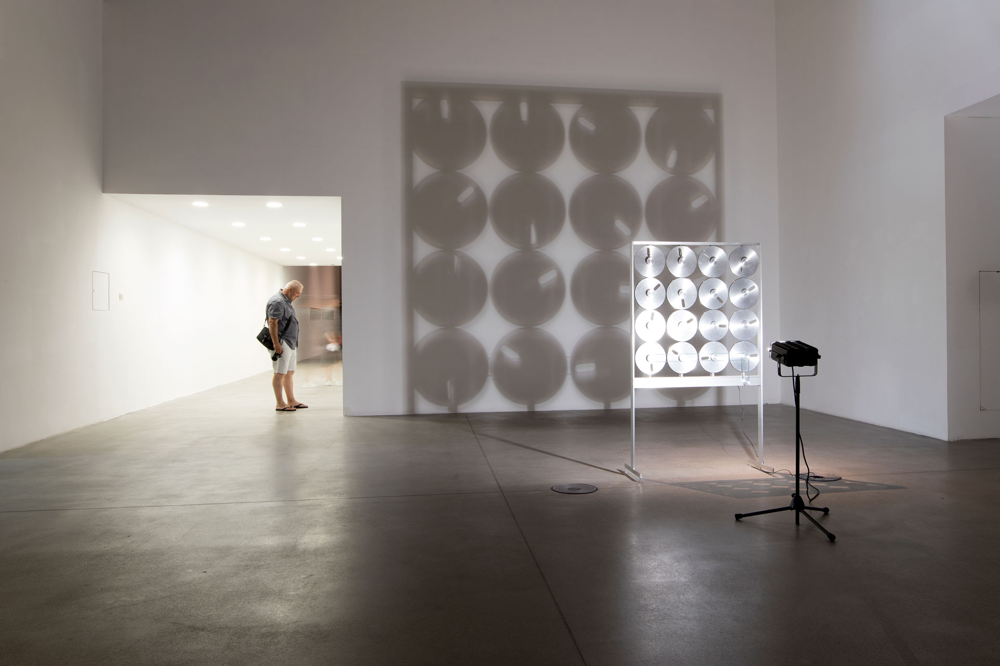
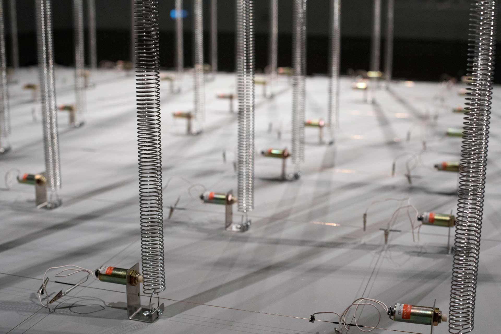
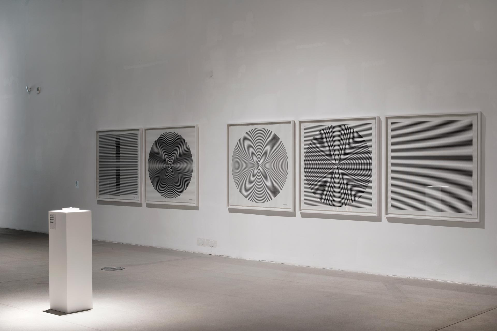
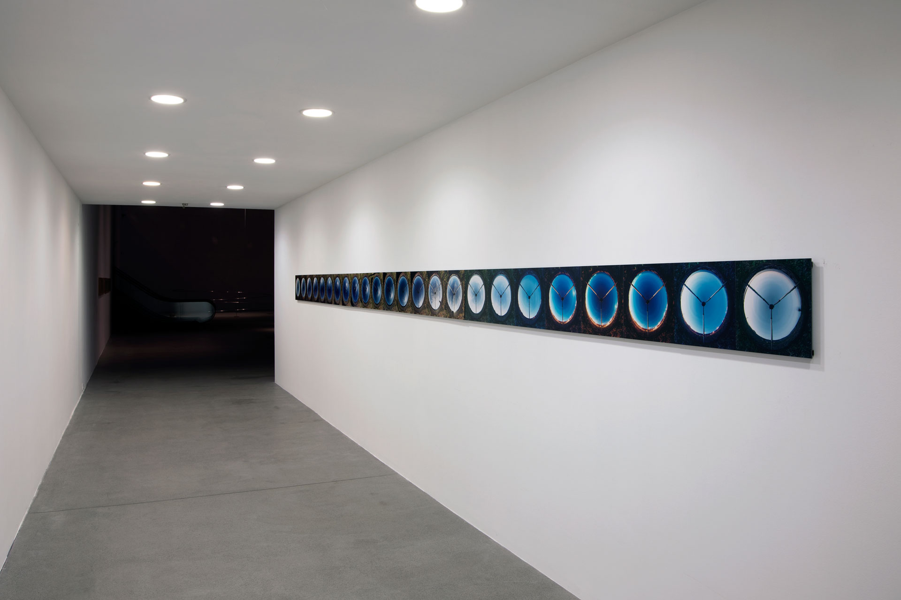
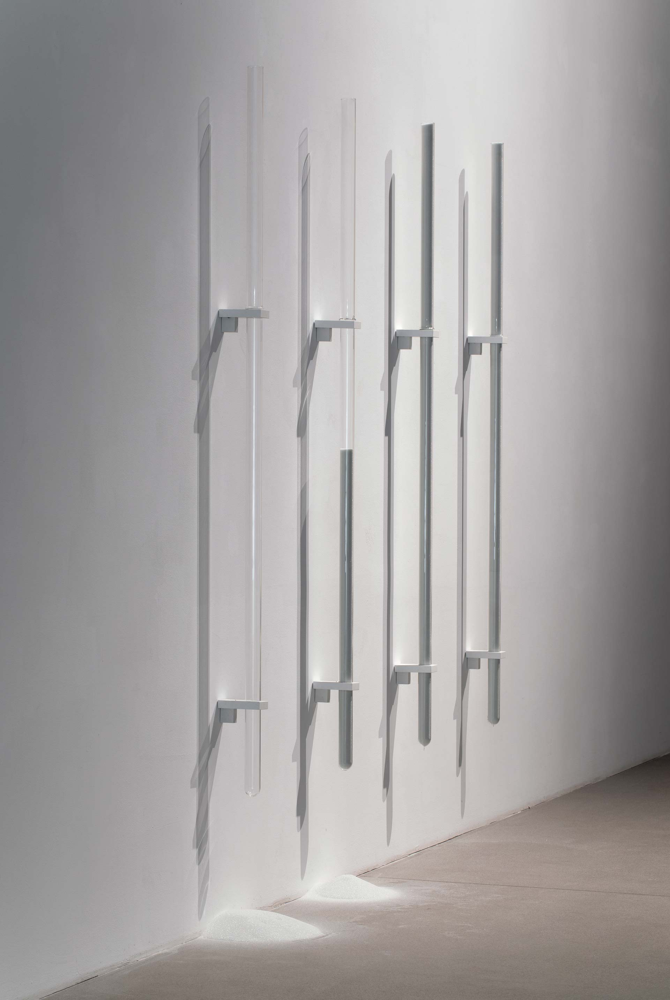

Museum of Contemporary Art, MSU, Zagreb
2017
Kinetic Installation, Antigravity Model, Spring Field, Time Zones, Plane, Large Movement 1, Arranged
Randomness 3, Vertical Lines in White 5&6, 24 hours, Solar Incidences, Lines & Circles, Perspective Study 3,
Perspective Studies
A new version of the mid-career retrospective exhibition, presented in Helsinki in the beginning of the year,
was shown in Zagreb during the summer. Some works of the earlier version were left out and some new ones were
added.
The exhibition shared the museum space with local artist Ivan Franke's solo exhibition Perceptual Drift. The
artists have known each other for years, and the use of museum space was planned together, which created
interesting dialogue between the two exhibitions. One larger space was divided by the two exhibitions, but
mainly the works by Franke and Grönlund-Nisunen were installed in spaces of their own.
A group of students of Aalto University's ViCCA MA-program and University of Zagreb's Faculty of Architecture
had a simultaneous workshop in Zagreb, part of which was to participate in mounting the two exhibitions. The
Croatian students worked with the Finnish artists and vice versa. After the opening of the exhibition, the
workshop continued in the former home of Croatian artist/architect Vjenceslav Richter.




